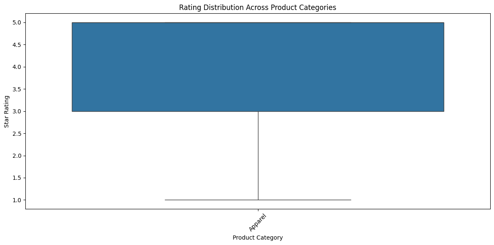
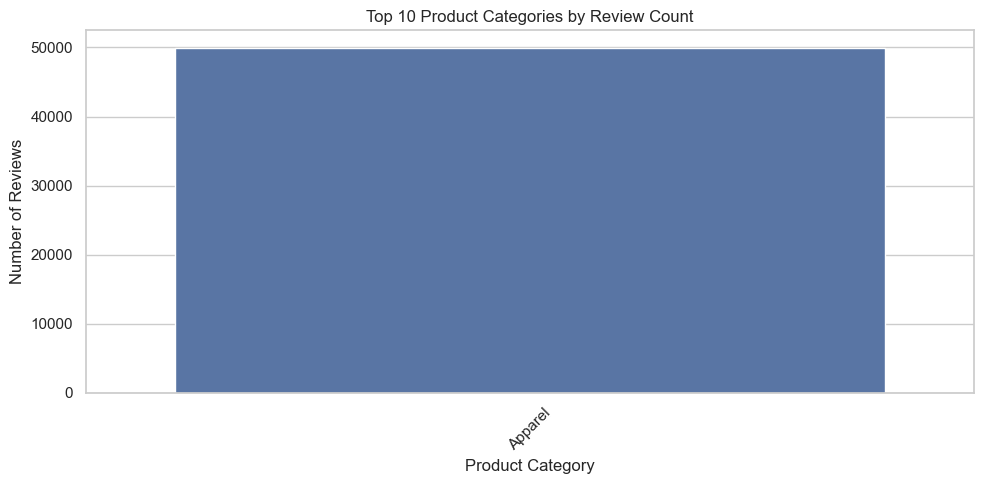
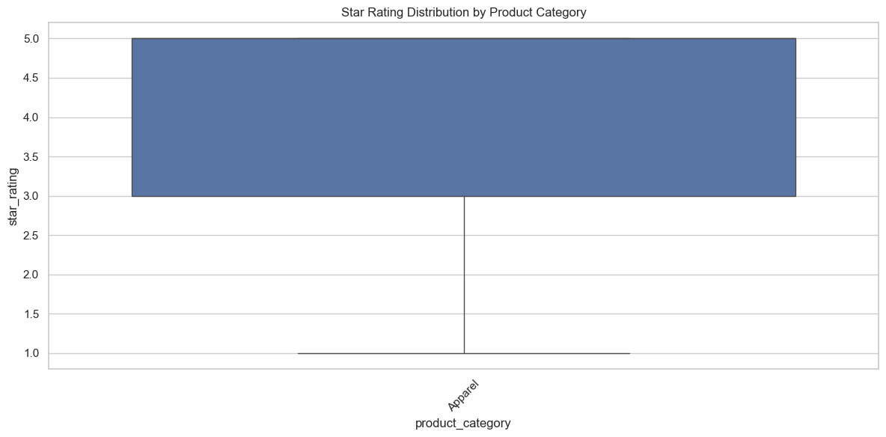
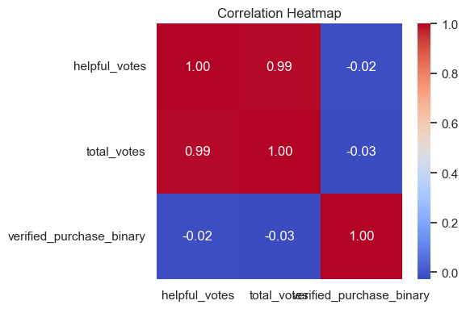
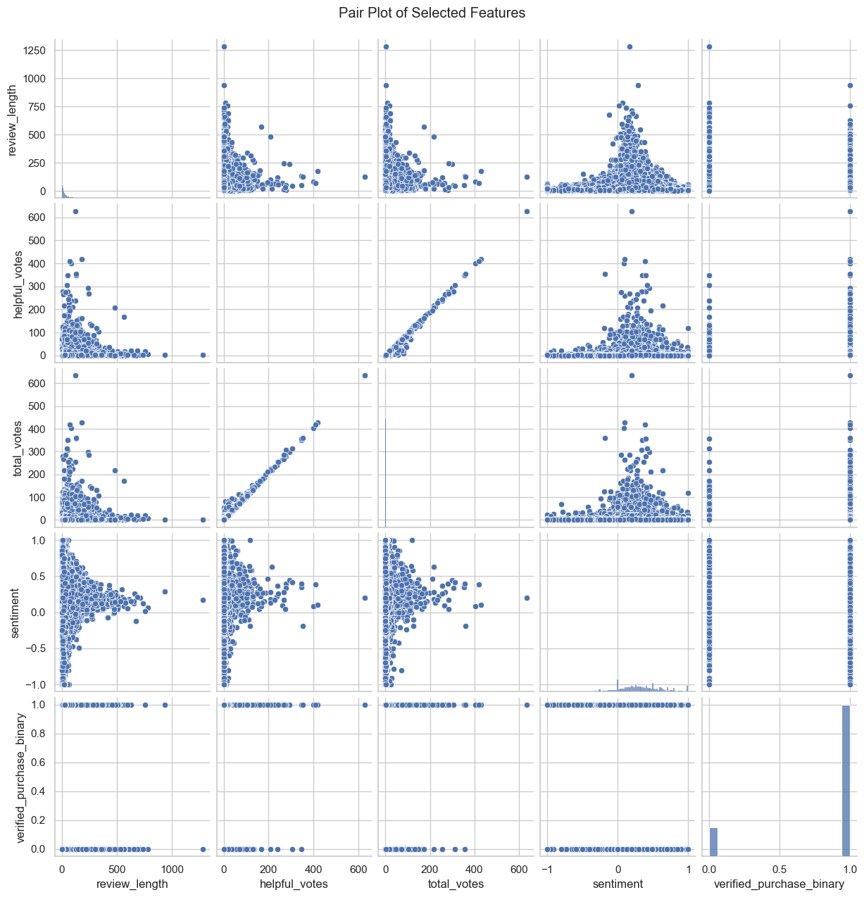

Capstone Project Analysis
A Deep Dive into Amazon Apparel Reviews
Data Sources:
- 🗃️ amazon_reviews_us_Apparel_v1_00.csv: Main reviews dataset
- 📊 product_data.jsonl: Product metadata
- 🏷️ image_labels.csv: Image classifications
Data Processing Pipeline
Pipeline Overview:
- Load and clean raw data (CSV, JSONL)
- Feature engineering (text processing, date parsing)
- Generate visualizations (matplotlib/seaborn)
- Cache processed data (artifacts/)
- Train models and evaluate
Top 10 Product Categories
Data Processing:
- Load reviews from amazon_reviews_us_Apparel_v1_00.csv
- Group by product category
- Count reviews per category
- Sort and select top 10
- Plot using seaborn barplot

Top 10 categories by review count — visualization generated from aggregated review data.
Rating Distribution by Category
Data Processing:
- Filter reviews with valid ratings
- Group by product category
- Calculate rating statistics
- Generate boxplot showing distribution
- Plot saved as plot_01.png

Distribution of star ratings across categories — shows variance and outliers.
Correlation Analysis
Data Processing:
- Select numeric features from reviews
- Calculate correlation matrix
- Generate heatmap using seaborn
- Annotate with correlation values
- Save as plot_02.png

Correlation heatmap for numeric features — useful to spot collinearity.
Review Volume Over Time
Data Processing:
- Parse review dates from dataset
- Group reviews by time period
- Calculate review counts
- Generate time series plot
- Save visualization as plot_03.png

Review count across years — highlights trends and seasonality.
Machine Learning Pipeline — Part 1
Text Processing & Targets:
- Text preprocessing:
- Clean and tokenize reviews
- Build TF-IDF features (cached in artifacts/tfidf.pkl)
- Target preparation:
- Star ratings for regression
- Sentiment classes for classification
Machine Learning Pipeline — Part 2
Model Training:
- Data splitting and preprocessing pipelines
- Handle class imbalance: SMOTE, undersampling, class weights
- Train multiple models (LogReg, RF, GB, ensembles)
- Evaluate with classification reports and confusion matrices
ResNet50 Training & Results — Data & Setup
Computer Vision Pipeline — Setup:
- Image preparation:
- Load from dataset/images/
- Organize into train/val/test
- Apply augmentation
- Model setup:
- Load ResNet50 architecture
- Configure fine-tuning layers
- Set up training parameters
ResNet50 Training & Results — Evaluation
Evaluation & Metrics:
- Generate predictions on test set
- Create confusion matrix (plot_09.png)
- Calculate metrics per class (precision, recall, F1)
- Inspect class-level confusions to inform augmentation or class rebalancing

Confusion matrix for ResNet50 — shows class-level performance and confusions.
Artifact Organization
Project Structure:
Capstone Project/
├── artifacts/ # Cached computations
│ ├── tfidf.pkl # Vectorizer
│ └── tfidf_matrix.pkl
├── dataset/ # Images & labels
│ └── images/
├── slide_images/ # Generated plots
│ ├── plot_00.png
│ ├── plot_01.png
│ └── ...
└── runs/ # Model outputs
└── detect/